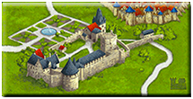
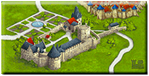

カルカソンヌ沼
“沼” というネットスラング発祥の言葉も、近頃は市民権を得てきたようです。沼にはまる、といった表現だけではなく “沼る”、“沼っぽい”、“沼沼しい” などといった多彩な表現もすでに定着しているようです。
なぜ湖や池ではなく沼なのかというと、日本人にとって馴染み深い沼は、物語に出てくるようないわゆる “底なし沼” かと思います。一度はまってしまうとズブズブと沈み込んでしまい、二度と出てこれないあの底なし沼です。湖沼学で定義されてる沼を想像する人はまずいないのではないでしょうか。私もたった今 “沼の定義” で検索して出てきた結果に湖沼学なんて文字が出てきたので、湖沼学なんて学問があるのかぁ、と初めて知ったくらいで、やはり沼というと物語にでてくる底なし沼を連想します。
あの一度はまってしまうと二度と浮かんでこれない底なし沼のイメージと、一度その世界に入り込むと二度と帰ってこれない道楽や購買欲の世界にどっぷりはまり込んだイメージとが、イメージ的にぴったりと当てはまって、日本人的にはいとおかしなわけです。
カルカソンヌは沼りやすいボードゲームです。
ミニサイズのものも含めると、多数の拡張がリリースされているので、購買欲が刺激されて沼りやすいというだけではありません。ベースゲーム自体に沼りやすい要素があります。
まずミープルがかわいい。たぶんフォロワーという名前のままだと、ここまでミープルが好き！！と言う人は激増しなかったでしょう。もちろんミープルという名称に変わったことに眉をしかめる人たちが一定数いることは知っています。でもそれをフォロワーと呼ぼうが “My peaple (ミープル)” と呼ぼう可愛いものは可愛いでしょう？
次にタイルです。
第 1 版のタイルは下のような感じで、とてもじゃありませんが沼る要素など一切ありませんでした (それがよいという人も一定数います)。
それが第 2 版から風向きが変わります。タイルのデザインがビビッドで精細なものになります。
マイナーアップデートである第 2.1 版や現行バージョンである第 3 版ではさらに精細かつ美しくなります。
 

単純にタイルが美しいのでコレクター心がくすぐられ、新しい拡張や拡張のアップデートがあるたびに欲しくなってしまい、沼から抜けることができなくなってしまうのです。